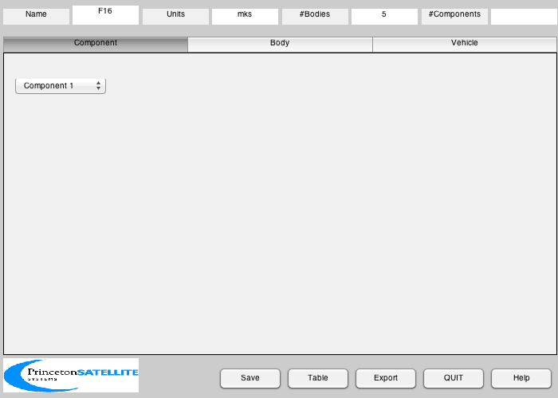
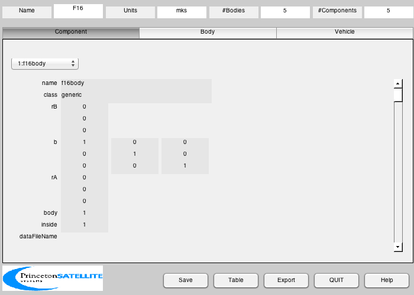
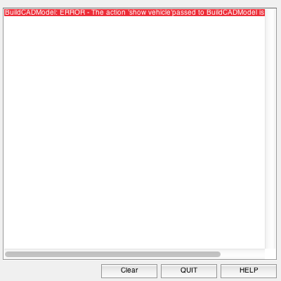

Build the F16 Model.
Loads an OBJ file first, which may take a few minutes. ------------------------------------------------------------------------ See also BHinge, BuildCADModel, CreateBody, CreateComponent, LoadCAD, QLVLH, Constant, TesselatePolygon ------------------------------------------------------------------------
Contents
- Read in the model
- Read in the model
- Point the nose along x and tail along z
- Convert to triangles
- Want metric
- Use the CAD interface
- Create the bodies
- Rudder
- Aileron Right
- Aileron Left
- Elevator
- This creates the connections between the bodies
- Assign components to the core
- Add in the engine
- Add in the control surfaces
- Rudder
- Ailerons
- Elevator
- Sensors
- Display
%------------------------------------------------------------------------------- % Copyright (c) 2002 Princeton Satellite Systems, Inc. All rights reserved. %-------------------------------------------------------------------------------
Read in the model
%------------------
r = 6378.165 + 10;
v = 502;
rECI = [r;0;0];
vECI = [0;v;0];
qLVLH = QLVLH( rECI, vECI );
q = [1;0;0;0];
omega = [0;0;0];
lengthF16 = 14.8;
Read in the model
%------------------ disp('Load the OBJ file...') g = LoadCAD('F16dof.obj'); disp('Finished loading. Build the model...')
Load the OBJ file... Finished loading. Build the model...
Point the nose along x and tail along z
%---------------------------------------- b = [1 0 0;0 0 1;0 -1 0]*[0 0 1; 0 1 0; -1 0 0]; for k = 1:length(g.component) g.component(k).v = (b*g.component(k).v')'; end maxX = 0; minX = 0; for k = 1:length(g.component) maxX = max([maxX g.component(k).v(:,1)']); minX = min([minX g.component(k).v(:,1)']); end scale = lengthF16/(maxX - minX); for k = 1:length(g.component) g.component(k).v = g.component(k).v*scale; end
Convert to triangles
%---------------------
g = TesselatePolygon( g );
Want metric
%------------ inertiaConv = Constant('slug-ft^2 to kg-m^2'); massConv = Constant('lb force to kg'); mass = struct( 'mass', 20500*massConv,... 'inertia', [9497 0 -982; 0 55814 0 ;-982 0 63100]*inertiaConv,... 'cM', [0;0;0] );
Use the CAD interface
%---------------------- BuildCADModel( 'initialize' ); BuildCADModel( 'set mass', mass ); BuildCADModel( 'set name' , 'F16' ); BuildCADModel( 'set units', 'mks' ); BuildCADModel( 'set rECI' , rECI ); BuildCADModel( 'set vECI' , vECI ); BuildCADModel( 'set qLVLH', qLVLH ); BuildCADModel( 'set qECIToBody', q ); BuildCADModel( 'set omega', omega ); BuildCADModel( 'set aerodynamic model', 'F16Aerodynamics' ); BuildCADModel( 'set aerodynamic model file', ':Data:AeroDataFile.txt' ); % For each component, we need to find its origin and displace it so that % the axis of rotation is at the origin %-----------------------------------------------------------------------
Create the bodies
%------------------ bodyName = {'core' 'rudder' 'aileronRight' 'aileronLeft' 'elevator' }; axisRot = [0 3 2 2 2];
Rudder
%------- dZ = 4; dY = max(g.component(1).v(:,2)) - min(g.component(1).v(:,2)); angle = atan(dZ/dY); c = cos(angle); s = sin(angle); bHinge{2} = [c s 0; -s c 0; 0 0 1]; rudderUnitVector = bHinge{2}'*[0;1;0]; y = mean(g.component(1).v(:,2)); x = mean(g.component(1).v(:,1)); rHinge(:,2) = [x;y;0]; rRudderDrive = [max(g.component(1).v(:,1));min(g.component(1).v(:,2));0]; kInRudder = 1; for k = kInRudder for j = 1:3 g.component(k).v(:,j) = g.component(k).v(:,j) - rHinge(j,2); end end g.component(1).v = (bHinge{2}'*g.component(1).v')';
Aileron Right
%-------------- x = mean(g.component(2).v(:,1)); rHinge(:,3) = [x;0;0]; bHinge{3} = eye(3); kInAileronRight = 2; for k = kInAileronRight for j = 1:3 g.component(k).v(:,j) = g.component(k).v(:,j) - rHinge(j,3); end end
Aileron Left
%------------- x = mean(g.component(3).v(:,1)); rHinge(:,4) = [x;0;0]; bHinge{4} = eye(3); kInAileronLeft = 3; for k = kInAileronLeft for j = 1:3 g.component(k).v(:,j) = g.component(k).v(:,j) - rHinge(j,4); end end
Elevator
%--------- y = mean(g.component(4).v(:,2)); x = mean(g.component(4).v(:,1)); rHinge(:,5) = [x;0;0]; bHinge{5} = eye(3); kInElevator = [4 6]; for k = kInElevator for j = 1:3 g.component(k).v(:,j) = g.component(k).v(:,j) - rHinge(j,5); end end m = CreateBody( 'make', 'name', 'Core' ); BuildCADModel( 'add body', m ); for k = 2:length(bodyName) m = CreateBody( 'make', 'name', bodyName{k}, 'bHinge', struct( 'b', bHinge{k}, 'axis', axisRot(k) ), 'previousBody', 1, 'rHinge', rHinge(:,k) ); BuildCADModel('add body', m ) ; end
This creates the connections between the bodies
%------------------------------------------------ BuildCADModel( 'compute paths' );
Assign components to the core
%------------------------------ kInCore = [5 7 9 10]; coreColor = {[0.7 0.7 0.7] [0.7 0.7 0.7] [0.7 0.7 0.7] [0.1 0.6 0.7]}; j = 0; for k = kInCore j = j + 1; m = CreateComponent( 'make', 'generic', 'faceColor', coreColor{j}, 'vertex', g.component(k).v, 'face', g.component(k).f,... 'specularStrength', 1, 'diffuseStrength', 0.3,'rA', [0;0;0], 'mass', 0, 'name', g.component(k).name, 'body', 1 ); BuildCADModel( 'add component', m ); end
Add in the engine
%------------------ m = CreateComponent( 'make', 'f16 gas turbine', 'faceColor', [0.7 0.7 0.7], 'vertex', g.component(8).v, 'face', g.component(8).f,... 'specularStrength', 1, 'diffuseStrength', 0.3,'rA', [0;0;0], 'mass', 0, 'name', g.component(8).name, 'body', 1,... 'dataFileName', ':Data:EngineDataFile.txt', 'unitVector', [1;0;0] ); BuildCADModel( 'add component', m ); %--------------------------------------------------------
Add in the control surfaces
%--------------------------------------------------------
Rudder
%------- for k = kInRudder m = CreateComponent( 'make', 'generic', 'faceColor', [0.6 0.6 0.6],... 'vertex', g.component(k).v, 'face', g.component(k).f,... 'specularStrength', 1, 'diffuseStrength', 0.3,... 'rA', [0;0;0], 'mass', 0, 'name', g.component(k).name,... 'body', 2 ); BuildCADModel( 'add component', m ); end m = CreateComponent( 'make', 'single axis linear drive', 'powerStandby', 25,... 'unitVector', rudderUnitVector, 'faceColor', [0.6 0.6 0.6],... 'rA', rRudderDrive, 'mass', 0.5, 'name', 'Rudder Drive',... 'body', 1, 'drivenBody', 2, 'inside', 1 ); BuildCADModel( 'add component', m );
Ailerons
%--------- for k = kInAileronRight m = CreateComponent( 'make', 'generic', 'faceColor', [0.6 0.6 0.6],... 'vertex', g.component(k).v, 'face', g.component(k).f,... 'specularStrength', 1, 'diffuseStrength', 0.3,... 'rA', [0;0;0], 'mass', 0, 'name', g.component(k).name, 'body', 3 ); BuildCADModel( 'add component', m ); end m = CreateComponent( 'make', 'single axis linear drive', 'powerStandby', 25,... 'unitVector', [0;0;1], 'faceColor', [0.6 0.6 0.6],... 'rA', rHinge(:,3), 'mass', 0.5, 'name', 'Aileron RIght Drive',... 'body', 1, 'drivenBody', 3, 'inside', 1 ); BuildCADModel( 'add component', m ); for k = kInAileronLeft m = CreateComponent( 'make', 'generic', 'faceColor', [0.6 0.6 0.6],... 'vertex', g.component(k).v, 'face', g.component(k).f,... 'specularStrength', 1, 'diffuseStrength', 0.3,... 'rA', [0;0;0], 'mass', 0, 'name', g.component(k).name, 'body', 4 ); BuildCADModel( 'add component', m ); end m = CreateComponent( 'make', 'single axis linear drive', 'powerStandby', 25,... 'unitVector', [0;0;1], 'faceColor', [0.6 0.6 0.6],... 'rA', rHinge(:,4), 'mass', 0.5, 'name', 'Aileron Left Drive',... 'body', 1, 'drivenBody', 4, 'inside', 1 ); BuildCADModel( 'add component', m );
Elevator
%--------- for k = kInElevator m = CreateComponent( 'make', 'generic', 'faceColor', [0.6 0.6 0.6],... 'vertex', g.component(k).v, 'face', g.component(k).f,... 'specularStrength', 1, 'diffuseStrength', 0.3,... 'rA', [0;0;0], 'mass', 0, 'name', g.component(k).name, 'body', 5 ); BuildCADModel( 'add component', m ); end m = CreateComponent( 'make', 'single axis linear drive', 'powerStandby', 25,... 'unitVector', [0;0;1], 'faceColor', [0.6 0.6 0.6],... 'rA', rHinge(:,5), 'mass', 0.5, 'name', 'Elevator Drive',... 'body', 1, 'drivenBody', 5, 'inside', 1 ); BuildCADModel( 'add component', m );
Sensors
%--------- m = CreateComponent( 'make', 'angle of attack sensor', 'mass', 0, 'x',0.01, 'y', 0.01, 'z', 0.01, ... 'name', 'Angle of Attack Sensor', 'body', 1 ); BuildCADModel( 'add component', m ); m = CreateComponent( 'make', 'rate gyro', 'mass', 0, 'x',0.01, 'y', 0.01, 'z', 0.01,... 'name', 'Rate Gyro', 'body', 1, 'unitvector', [0;1;0] ); BuildCADModel( 'add component', m );
CreateComponent: Rate Gyro: The following fields were not recognized as device properties, but have been added to your component. To make a device property recognized, add it to the list in the "rate gyro" case of DeviceProperties.m. 'unitvector'
Display
%--------- BuildCADModel('show vehicle') %-------------------------------------- % PSS internal file version information %--------------------------------------